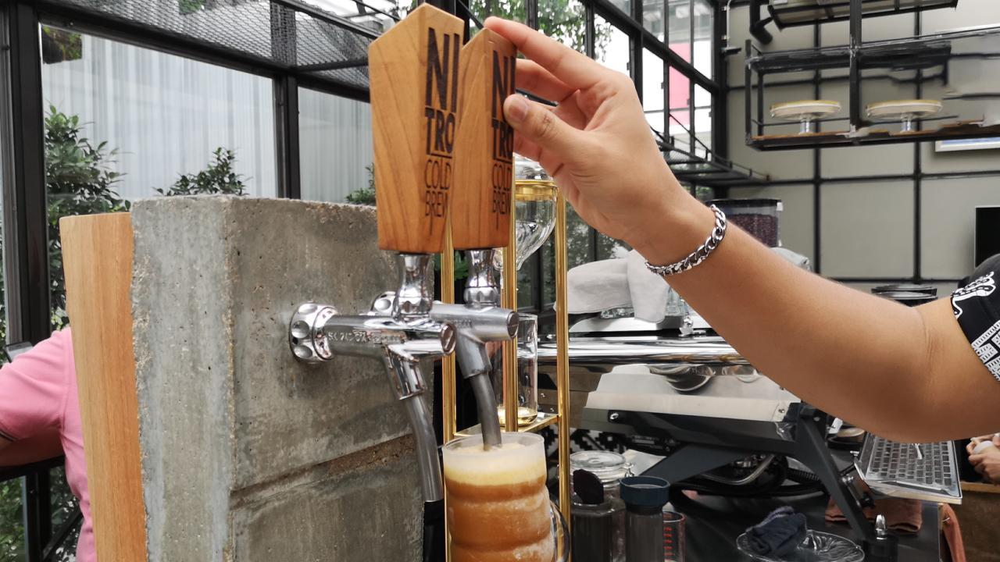
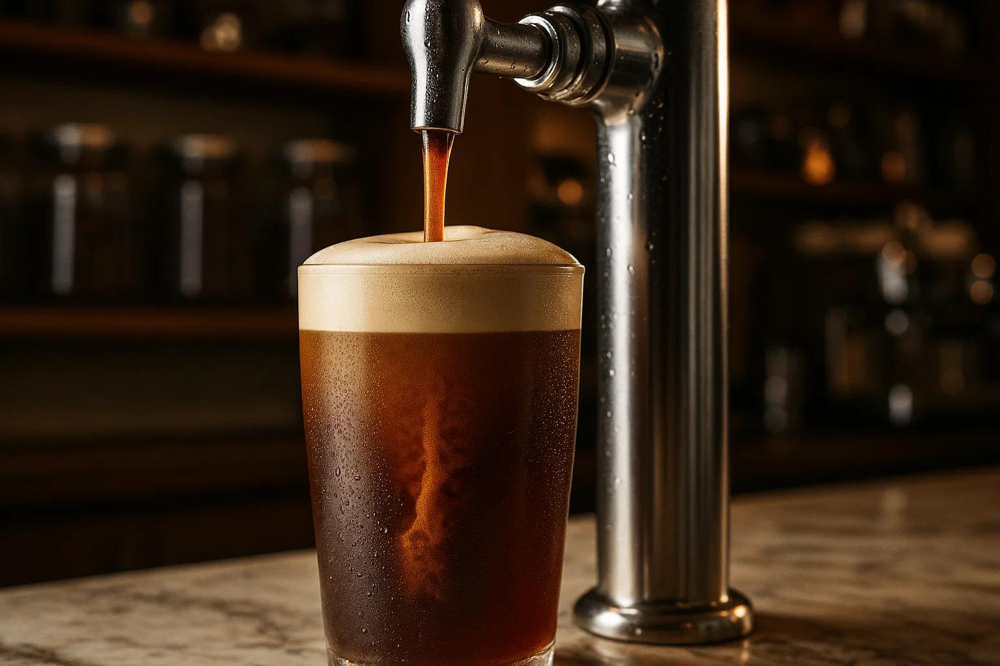

Tóm tắt nhanh
Khí N₂ trong cold brew là gì?
Cold brew là cà phê ủ lạnh trong nhiều giờ để chiết xuất vị ngọt, ít chua và hậu vị êm. Khi bơm khí Nitơ (N₂) vào cold brew, đồ uống trở thành nitro cold brew: có bọt mịn, lớp chảy tầng giống bia stout, cảm giác béo nhẹ dù không thêm sữa hoặc kem.
Vai trò của N₂ không phải để tạo gas mạnh như soda. Nitơ ít tan trong nước hơn CO₂, tạo bong bóng nhỏ hơn và không làm cà phê bị vị chua carbonic. Vì vậy nitro cold brew thường có cảm giác mượt, ngọt tự nhiên và phù hợp phục vụ không đá hoặc ít đá.
Vì sao quán cà phê dùng N₂ cho nitro cold brew?
- Tạo trải nghiệm khác biệt: dòng rót cascade và lớp foam mịn giúp ly cold brew nổi bật tại quầy bar hoặc khi quay video menu.
- Tăng cảm giác ngọt và béo: bọt N₂ làm texture dày hơn, giúp khách cảm nhận cà phê êm hơn mà không cần thêm nhiều đường sữa.
- Ổn định chất lượng phục vụ: cold brew được giữ trong keg kín, giảm tiếp xúc oxy và dễ rót đồng đều theo từng ly.
- Phù hợp menu premium: nitro cold brew có thể bán như dòng signature, kết hợp cà phê rang vừa, trà cold brew, cacao hoặc mocktail cà phê.
- Giảm thao tác pha từng ly: khi hệ thống keg/tap đã ổn định, nhân viên chỉ cần rót đúng định lượng và kiểm tra áp suất.
N₂ khác CO₂ như thế nào khi pha đồ uống cà phê?
Kết luận: Nếu mục tiêu là nitro cold brew mịn, êm và ít chua, nên dùng N₂ hoặc hỗn hợp có tỷ lệ N₂ cao. CO₂ phù hợp hơn với đồ uống có gas rõ rệt.

Quy trình làm nitro cold brew bằng N₂
- Ủ cold brew nền: dùng cà phê rang vừa hoặc vừa đậm, xay thô, ủ lạnh 12-18 giờ rồi lọc sạch cặn mịn.
- Làm lạnh trước khi nạp khí: cold brew nên được giữ lạnh để vị ổn định và giúp bọt mịn hơn khi rót.
- Chuyển vào keg hoặc bình áp: vệ sinh keg, dây, tap và các đầu nối trước khi nạp.
- Kết nối bình N₂: dùng van điều áp phù hợp, kiểm tra rò rỉ bằng dung dịch tạo bọt tại các khớp nối.
- Nạp và lắc/tuần hoàn: nạp N₂ theo áp suất phù hợp với thiết bị, có thể lắc nhẹ hoặc tuần hoàn để khí phân tán đều.
- Rót qua tap nitro: dùng tap có restrictor plate hoặc đầu tạo bọt để tạo hiệu ứng cascade và lớp foam ổn định.
Lưu ý: Áp suất cụ thể phụ thuộc keg, dây, tap và công thức quán. Không tăng áp vượt khuyến nghị của thiết bị.
Thiết bị cần chuẩn bị cho quán cà phê
- Bình khí N₂ cấp thực phẩm: thường chọn bình 10L, 14L, 40L hoặc 50L tùy sản lượng bán.
- Van điều áp N₂: dùng đúng chuẩn kết nối bình Nitơ, có đồng hồ áp vào/ra rõ ràng.
- Keg hoặc bình chịu áp: chọn dung tích phù hợp lượng cold brew bán trong 1-3 ngày để giữ hương tốt.
- Dây dẫn và fitting an toàn thực phẩm: vệ sinh được, chịu áp, hạn chế mùi nhựa ảnh hưởng cà phê.
- Tap nitro: cần đầu rót chuyên dụng để tạo bọt mịn; tap thường sẽ khó tạo hiệu ứng đẹp.
- Quy trình vệ sinh: làm sạch keg, dây, tap định kỳ để tránh mùi cũ và nhiễm vi sinh.
Chọn bình N₂ cho mô hình quán
Không có một dung tích bình cố định cho mọi quán. Cách chọn nên dựa trên sản lượng nitro cold brew, số keg, không gian đặt bình và tần suất giao khí.
An toàn khi dùng khí N₂ trong quán cà phê
- Cố định bình đứng: dùng dây hoặc giá giữ bình, tránh đổ ngã trong khu vực pha chế.
- Không dùng sai van: Nitơ cần van điều áp và đầu nối đúng chuẩn, không tự chế khớp nối.
- Kiểm tra rò rỉ: thử bằng dung dịch tạo bọt sau khi lắp bình, đặc biệt ở van và fitting.
- Đảm bảo thông gió: N₂ không độc nhưng có thể làm giảm oxy trong không gian kín nếu rò rỉ nhiều.
- Dùng khí đúng cấp: ưu tiên Nitơ cấp thực phẩm, có nguồn gốc và hồ sơ an toàn rõ ràng.
Câu hỏi thường gặp về khí N₂ cold brew
Nitro cold brew dùng khí N₂ hay CO₂?
Nitro cold brew thường dùng khí Nitơ (N₂), không dùng CO₂ như đồ uống có gas. N₂ tạo bọt mịn, cảm giác kem và vị êm hơn, trong khi CO₂ tạo vị chua gắt và bọt lớn hơn.
Khí N₂ dùng cho cold brew cần độ tinh khiết bao nhiêu?
Quán cà phê nên dùng Nitơ cấp thực phẩm, thường từ 99.99% trở lên, có hồ sơ COA hoặc MSDS khi cần kiểm soát chất lượng. Không nên dùng nguồn khí không rõ tiêu chuẩn cho đồ uống.
Một bình N₂ dùng được bao lâu cho quán cà phê?
Thời gian sử dụng phụ thuộc dung tích bình, áp suất cài đặt, kích thước keg và số ly bán mỗi ngày. Quán nhỏ thường dùng bình 10L hoặc 14L để thử nghiệm, quán bán đều có thể dùng bình 40L hoặc 50L để giảm tần suất thay bình.
Đặt khí N₂ cho cold brew tại Hà Nội
Tân Phúc Hưng cung cấp bình khí Nitơ cho quán cà phê, nhà rang, bar đồ uống và đơn vị tổ chức sự kiện tại Hà Nội. Khách hàng được tư vấn chọn dung tích bình, van điều áp, lịch giao khí và hồ sơ an toàn phù hợp với mô hình vận hành.